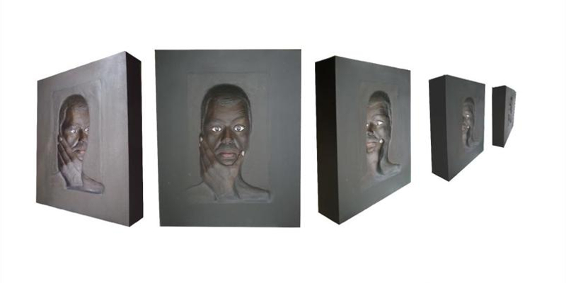

February 13, 2012
Creating art makes Munawar go OMG!
© Munawar Ali Syed
Munawar Ali Syed feels like an artist the moment he engages himself in the visual arts, which soothes the "constant feeling of passion and restlessness" inside him. Syed told me in an interview that visual skills, sensitivity and madness make an artist. When asked how he feels about being an artist, he simply said, "Oh My God!"
In 1993, when he realised that the fine arts are a proper field of study, he knew then that he wanted to become an artist. He received his Bachelor of Fine Arts degree from the National College of Arts in Lahore, and has exhibited his work in Pakistan and abroad. When he finished his first work, he thought that "art isn't an easy job", but after that initial thought, he started thinking about what he wanted to do next.
Syed works with toothpicks and also makes optical-illusion sculptures. When he's angry, he carves, but when he's relaxed, he prefers the assemblage and repetition methods. For him, the most significant part of producing art is inspiration, whereas he finds that the most enjoyable thing about it is displaying his work at an exhibition to share it with everyone. The thought that there's a lot that he still needs to say through his work is what drives him to continue producing art. He doesn't think he could ever stop doing what he does because for him, his work is "a metamorphosis".
The best comment he received from someone on his art was: "It's different and innovative." On the other hand, the worst reaction he received was: "Who's Munawar?" He doesn't care if people don't understand his art, but it's important for him that they like it. His art fulfils and satisfies him. Neither does he believe that critique plays a role in shaping his work nor does he take criticism well. He said politics, current affairs, passion, travelling, and friends and family play an important role in producing art. As for religion, his art strengthens his faith and he's grateful to God for giving him the ability to do something.
Syed is always working on two to three projects simultaneously. The recurring messages that he tries to express through his art are almost always a reaction to sociopolitical issues. He tries to work on more humorous themes and to avoid gloomy ones. He frequently depicts the media, repetition, cube, book, and hand and foot impressions as symbols in his art.
He admires the artists Rashid Rana, Shahid Sajjad, Sadequain, Leonardo da Vinci, Alberto Giacometti and Henry Moore the most. He also admires the works of Naseer Bhurgri, Dabeer Ahmed, Salahuddin Mian, Waseem Ahmed and Michael Carson. When asked who he would prefer to receive training from, he chose Henry Moore.
He believes that art is taboo in the Pakistani society because of religion. However, he thinks art could play a positive role in our society. He said instead of discussing terrorism all the time, the media should draw more attention to what's happening in the art world. He finds art to be a popular profession in Pakistan, and whether it's easy or difficult being an artist in today's world depends on the individual.
While not everyone can understand art, he said, it's possible for everyone to appreciate it. But, he added, a sign or a symbol depicted in an art piece has a different meaning for different people, and it depends on the viewer how much they're able to absorb and what they learn from it. He agreed that some contemporary artists take advantage of that and produce mediocre work, whereas he also concurred that some artists produce controversial art only because controversy sells and some use their art only to make money.
Syed teaches at the Indus Valley School of Art & Architecture, as well as the Department of Visual Studies of the University of Karachi. He believes that the government should fund art schools, but opportunities should also be provided for non-commercial artists. The most important thing that he wants a potential artist to make sure that they never forget is that producing art is not easy, but as long as one is passionate about it, they should persevere.
First published in Pakistan Today